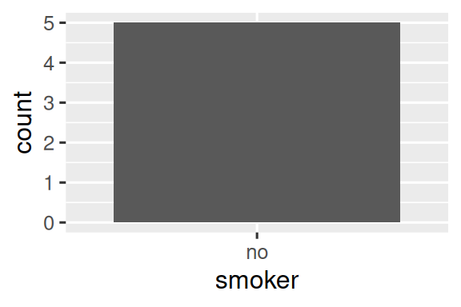
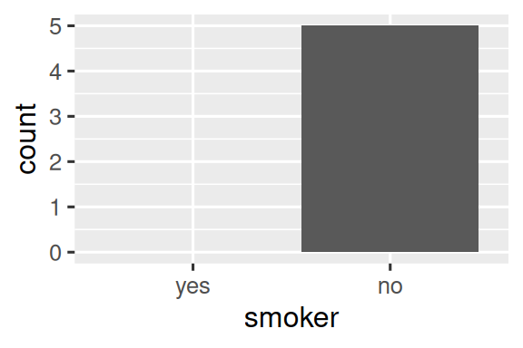

library(tidyverse)결측값
1 명시적 결측값
먼저 명시적 결측값, 즉 NA가 표시되는 셀을 만들거나 제거하는 데 유용한(handy) 도구 몇 가지를 탐구해 보겠습니다.
1.1 마지막 관측값 이월
결측값의 일반적인 용도는 데이터 입력 편의(data entry convenience)를 위한 것입니다. 데이터를 수동으로(by hand) 입력할 때, 결측값은 때때로 이전 행의 값이 반복되었음(또는 이월(carried forward)되었음)을 나타냅니다.
treatment <- tribble(
~person, ~treatment, ~response,
"Derrick Whitmore", 1, 7,
NA, 2, 10,
NA, 3, NA,
"Katherine Burke", 1, 4
)tidyr::fill()을 사용하여 이러한 결측값을 채울(fill in) 수 있습니다. 이것은 열의 집합을 취하여 select()처럼 작동합니다.
treatment |>
fill(everything())
#> # A tibble: 4 × 3
#> person treatment response
#> <chr> <dbl> <dbl>
#> 1 Derrick Whitmore 1 7
#> 2 Derrick Whitmore 2 10
#> 3 Derrick Whitmore 3 10
#> 4 Katherine Burke 1 4이 처리를 때로는 “마지막 관측값 이월(last observation carried forward)” 또는 줄여서 locf라고 합니다. 더 특이한(exotic) 방식으로 생성된 결측값을 채우려면 .direction 인수를 사용할 수 있습니다.
1.2 고정값
때로는 결측값이 어떤 고정되고 알려진 값, 일반적으로는 0을 나타냅니다. dplyr::coalesce()를 사용하여 이것을 대체(replace)할 수 있습니다.
x <- c(1, 4, 5, 7, NA)
coalesce(x, 0)
#> [1] 1 4 5 7 0때로는 구체적인(concrete) 값이 실제로는 결측값을 나타내는 정반대 문제에 부딪힐 것입니다. 이것은 일반적으로 결측값을 나타내는 적절한 방법이 없는 구형 소프트웨어에서 생성된 데이터에서 발생하므로(arises), 대신 99나 -999와 같은 특별한(special) 값을 사용해야 합니다.
가능하다면 데이터를 읽어 들일 때, 예를 들어 readr::read_csv()의 na 인수를 사용하여 이를 처리하세요(read_csv(path, na = "99")). 나중에 문제를 발견하거나 데이터 소스가 읽을 때 이를 처리할 방법을 제공하지 않는 경우 dplyr::na_if()를 사용할 수 있습니다.
x <- c(1, 4, 5, 7, -99)
na_if(x, -99)
#> [1] 1 4 5 7 NA1.3 NaN
계속 진행하기 전에 때때로(from time to time) 마주치게 될 한 가지 특별한 유형의 결측값이 있습니다. NaN(“난(nan)”이라고 발음함), 즉 숫자가 아님(not a number)입니다. 일반적으로 NA와 똑같이 작동하므로 아는 것이 그렇게 중요하지는 않습니다.
x <- c(NA, NaN)
x * 10
#> [1] NA NaN
x == 1
#> [1] NA NA
is.na(x)
#> [1] TRUE TRUE드문 경우지만(In the rare case) NA와 NaN을 구별(distinguish)해야 하는 경우 is.nan(x)를 사용할 수 있습니다. 결과를 결정할 수 없는(indeterminate) 수학 연산을 수행할 때 일반적으로 NaN을 마주치게 됩니다.
0 / 0
#> [1] NaN
0 * Inf
#> [1] NaN
Inf - Inf
#> [1] NaN
sqrt(-1)
#> Warning in sqrt(-1): NaNs produced
#> [1] NaN2 암묵적 결측값 (Implicit missing values)
지금까지 우리는 명시적으로(explicitly) 누락된(missing), 즉 데이터에서 NA를 볼 수 있는 결측값에 대해 논의했습니다. 그러나 데이터의 전체 행이 데이터에 단순히 없는 경우 결측값은 암묵적으로(implicitly) 누락될 수도 있습니다. 매 분기마다 어떤 주식의 가격을 기록한 간단한 데이터셋으로 그 차이를 설명해 보겠습니다.
stocks <- tibble(
year = c(2020, 2020, 2020, 2020, 2021, 2021, 2021),
qtr = c( 1, 2, 3, 4, 2, 3, 4),
price = c(1.88, 0.59, 0.35, NA, 0.92, 0.17, 2.66)
)이 데이터셋에는 두 개의 결측 관측값이 있습니다.
- 2020년 4분기
price는 그 값이NA이기 때문에 명시적으로 결측되었습니다. - 2021년 1분기
price는 데이터셋에 단순히 나타나지 않기 때문에 암묵적으로 결측되었습니다.
차이점에 대해 생각하는 한 가지 방법은 다음과 같은 선(Zen)의 화두(koan)입니다.
- 명시적 결측값은 부재(absence)의 존재(presence)이다.
- 암묵적 결측값은 존재의 부재이다.
작업할 물리적인(physical) 것을 갖기 위해 때때로 암묵적 결측값을 명시적으로 만들고 싶을 수 있습니다. 다른 경우에는 데이터 구조에 의해 명시적 결측값이 여러분에게 강제(forced upon)되며 여러분은 이를 제거하고 싶을 것입니다. 다음 섹션에서는 암묵적 누락(missingness)과 명시적 누락 사이를 이동하는(moving between) 몇 가지 도구에 대해 논의합니다.
2.1 피벗
암묵적 결측값을 명시적으로 만들고 그 반대로도 만들 수 있는 한 가지 도구인 피벗을 이미 보셨습니다. 데이터를 더 넓게(wider) 만들면 행과 새 열의 모든 조합(combination)이 어떤 값을 가져야 하기 때문에 암묵적 결측값이 명시적으로 만들어질 수 있습니다. 예를 들어 분기(qtr)를 열에 두도록 stocks를 피벗(pivot)하면 두 결측값이 모두 명시적이 됩니다.
stocks |>
pivot_wider(
names_from = qtr,
values_from = price
)
#> # A tibble: 2 × 5
#> year `1` `2` `3` `4`
#> <dbl> <dbl> <dbl> <dbl> <dbl>
#> 1 2020 1.88 0.59 0.35 NA
#> 2 2021 NA 0.92 0.17 2.66기본적으로(By default) 데이터를 길게(longer) 만들면 명시적 결측값이 보존되지만, 데이터가 깔끔하지 않아서만(not tidy) 존재하는 구조적(structurally) 결측값인 경우 values_drop_na = TRUE를 설정하여 이러한 값을 삭제(암묵적으로 만듦)할 수 있습니다.
2.2 완료
tidyr::complete()를 사용하면 존재해야 하는 행의 조합을 정의하는 일련의 변수를 제공하여 명시적 결측값을 생성할 수 있습니다. 예를 들어 stocks 데이터에는 year와 qtr의 모든 조합이 존재해야 한다는 것을 알고 있습니다.
stocks |>
complete(year, qtr)
#> # A tibble: 8 × 3
#> year qtr price
#> <dbl> <dbl> <dbl>
#> 1 2020 1 1.88
#> 2 2020 2 0.59
#> 3 2020 3 0.35
#> 4 2020 4 NA
#> 5 2021 1 NA
#> 6 2021 2 0.92
#> # ℹ 2 more rows일반적으로 기존 변수의 이름으로 complete()를 호출하여(call) 누락된 조합을 채웁니다. 그러나 개별 변수 자체가 불완전한 경우가 있으므로 대신 여러분 자신의 데이터를 제공할 수 있습니다. 예를 들어 stocks 데이터셋이 2019년부터 2021년까지 실행되어야 한다는 것을 알 수 있으므로 year에 해당 값을 명시적으로 제공할 수 있습니다.
stocks |>
complete(year = 2019:2021, qtr)
#> # A tibble: 12 × 3
#> year qtr price
#> <dbl> <dbl> <dbl>
#> 1 2019 1 NA
#> 2 2019 2 NA
#> 3 2019 3 NA
#> 4 2019 4 NA
#> 5 2020 1 1.88
#> 6 2020 2 0.59
#> # ℹ 6 more rows변수의 범위는 정확하지만 모든 값이 존재하지 않는 경우, full_seq(x, 1)을 사용하여 min(x)부터 max(x)까지 1씩 간격을 둔(spaced out) 모든 값을 생성할 수 있습니다.
경우에 따라(In some cases) 변수의 단순한 조합으로 완전한(complete) 관측값 세트를 생성할 수 없습니다. 이 경우 complete()가 대신해 주는 작업을 수동으로 수행할 수 있습니다. (필요한 어떤 기법의 조합이든 사용하여) 존재해야 하는 모든 행을 포함하는 데이터 프레임을 만든 다음 dplyr::full_join()을 사용하여 원본 데이터셋과 결합합니다.
2.3 조인
이것은 암묵적으로 결측된 관측값을 드러내는(revealing) 또 다른 중요한 방법인 조인(joins)으로 이어집니다. 하나의 데이터셋을 다른 데이터셋과 비교할 때 종종 값이 누락되었다는 것만 알 수 있기 때문에 여기에서 간략하게 언급하고자(mention) 합니다. dplyr::anti_join(x, y)는 y에 일치하는 항목(match)이 없는 x의 행만 선택하기 때문에 여기에서 특히 유용한 도구입니다. 예를 들어 두 개의 anti_join()을 사용하여 flights에 언급된(mentioned) 4개의 공항과 722대의 비행기에 대한 정보가 누락되었음을 밝혀낼 수 있습니다.
library(nycflights13)
flights |>
distinct(faa = dest) |>
anti_join(airports)
#> Joining with `by = join_by(faa)`
#> # A tibble: 4 × 1
#> faa
#> <chr>
#> 1 BQN
#> 2 SJU
#> 3 STT
#> 4 PSE
flights |>
distinct(tailnum) |>
anti_join(planes)
#> Joining with `by = join_by(tailnum)`
#> # A tibble: 722 × 1
#> tailnum
#> <chr>
#> 1 N3ALAA
#> 2 N3DUAA
#> 3 N542MQ
#> 4 N730MQ
#> 5 N9EAMQ
#> 6 N532UA
#> # ℹ 716 more rows2.4 연습 문제
- 항공사(carrier)와
planes에서 누락된 것처럼 보이는(appear to be missing) 행 사이의 관계(relationship)를 찾을 수 있습니까?
3 요인과 빈 그룹
마지막 유형의 누락(missingness)은 요인(factors)으로 작업할 때 발생할 수 있는 관측값이 포함되지 않은 그룹인 빈 그룹(empty group)입니다. 예를 들어 사람들에 대한 일부 건강 정보가 포함된 데이터셋이 있다고 상상해 보세요.
health <- tibble(
name = c("Ikaia", "Oletta", "Leriah", "Dashay", "Tresaun"),
smoker = factor(c("no", "no", "no", "no", "no"), levels = c("yes", "no")),
age = c(34, 88, 75, 47, 56),
)그리고 dplyr::count()를 사용하여 흡연자(smokers) 수를 세고(count) 싶습니다.
health |> count(smoker)
#> # A tibble: 1 × 2
#> smoker n
#> <fct> <int>
#> 1 no 5이 데이터셋에는 비흡연자만 포함되어 있지만 흡연자가 존재한다는 것을 알고 있습니다. 즉 흡연자 그룹은 비어 있습니다. .drop = FALSE를 사용하여 데이터에서 나타나지 않는 그룹을 포함하여 모든 그룹을 유지하도록 count()에 요청할(request) 수 있습니다.
health |> count(smoker, .drop = FALSE)
#> # A tibble: 2 × 2
#> smoker n
#> <fct> <int>
#> 1 yes 0
#> 2 no 5같은 원칙(principle)이 ggplot2의 이산형(discrete) 축에도 적용되며, 값이 없는 수준도 삭제됩니다(drop). 적절한 이산형 축에 drop = FALSE를 제공하여 이를 강제로(force) 표시할 수 있습니다.
ggplot(health, aes(x = smoker)) +
geom_bar() +
scale_x_discrete()
ggplot(health, aes(x = smoker)) +
geom_bar() +
scale_x_discrete(drop = FALSE)

동일한 문제가 dplyr::group_by()에서 더 일반적으로 발생합니다(comes up). 그리고 또다시 .drop = FALSE를 사용하여 모든 요인 수준을 보존할 수 있습니다.
health |>
group_by(smoker, .drop = FALSE) |>
summarize(
n = n(),
mean_age = mean(age),
min_age = min(age),
max_age = max(age),
sd_age = sd(age)
)
#> # A tibble: 2 × 6
#> smoker n mean_age min_age max_age sd_age
#> <fct> <int> <dbl> <dbl> <dbl> <dbl>
#> 1 yes 0 NaN Inf -Inf NA
#> 2 no 5 60 34 88 21.6빈 그룹을 요약(summarizing)할 때 요약 함수가 길이가 0인(zero-length) 벡터에 적용되기 때문에 여기에서 흥미로운 결과를 얻습니다. 길이가 0인 빈(empty) 벡터와 길이가 각각 1인 결측값 간에는 중요한 구별(distinction)이 있습니다.
# 두 개의 결측값을 포함하는 벡터
x1 <- c(NA, NA)
length(x1)
#> [1] 2
# 아무것도 포함하지 않는 벡터
x2 <- numeric()
length(x2)
#> [1] 0모든 요약 함수는 길이가 0인 벡터와 함께 작동하지만 언뜻 보기에 놀라운 결과를 반환할 수 있습니다. 여기서 mean(age)가 NaN을 반환하는 것을 볼 수 있는데, 이는 mean(age) = sum(age)/length(age)이고 여기서는 0/0이기 때문입니다. max()와 min()은 빈 벡터에 대해 -Inf와 Inf를 반환하므로 결과를 비어 있지 않은 새 데이터 벡터와 결합(combine)하고 다시 계산하면(recompute) 새 데이터의 최솟값 또는 최댓값을 얻게 됩니다
때로는 더 단순한 접근 방식으로 요약을 수행한 다음 complete()를 사용하여 암묵적 결측값을 명시적으로 만드는 것이 있습니다.
health |>
group_by(smoker) |>
summarize(
n = n(),
mean_age = mean(age),
min_age = min(age),
max_age = max(age),
sd_age = sd(age)
) |>
complete(smoker)
#> # A tibble: 2 × 6
#> smoker n mean_age min_age max_age sd_age
#> <fct> <int> <dbl> <dbl> <dbl> <dbl>
#> 1 yes NA NA NA NA NA
#> 2 no 5 60 34 88 21.6이 접근 방식의 주요 단점(drawback)은 수가 0이 되어야 한다는 것을 알면서도(even though you know) 개수(count)에 대해 NA를 얻게 된다는 것입니다.